Hybrid Model
SARIMA + LSTM Residual Correction
SARIMA provides a seasonal baseline and LSTM learns residual errors using a 24-hour window.
Final predictions combine SARIMA baseline + Predicted residuals. Evaluated overall and at peak-load (p90).
Loading CSV metrics…
Metrics & Visualizations
Click an image to zoom. Navigate between images using arrow buttons or keyboard.
Training History
Residual LSTM convergence and validation metrics

Actual vs Predicted
Baseline + Residual correction behavior
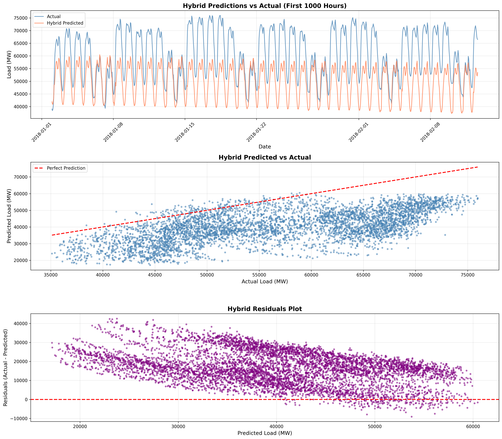
Peak Detection PR Curve
Precision-Recall analysis for peak-load detection
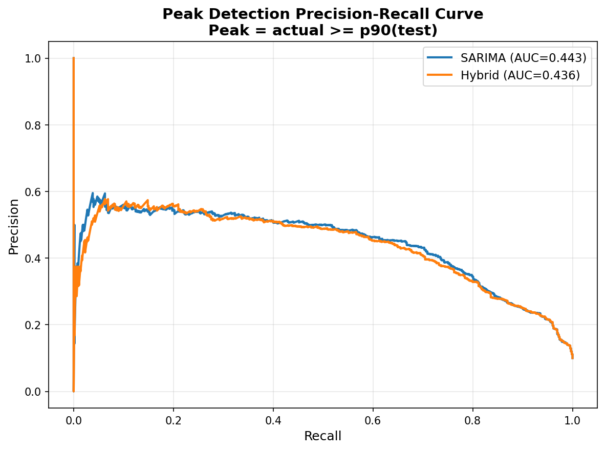
Data Split Visualization
Train/Val/Test chronological partitioning
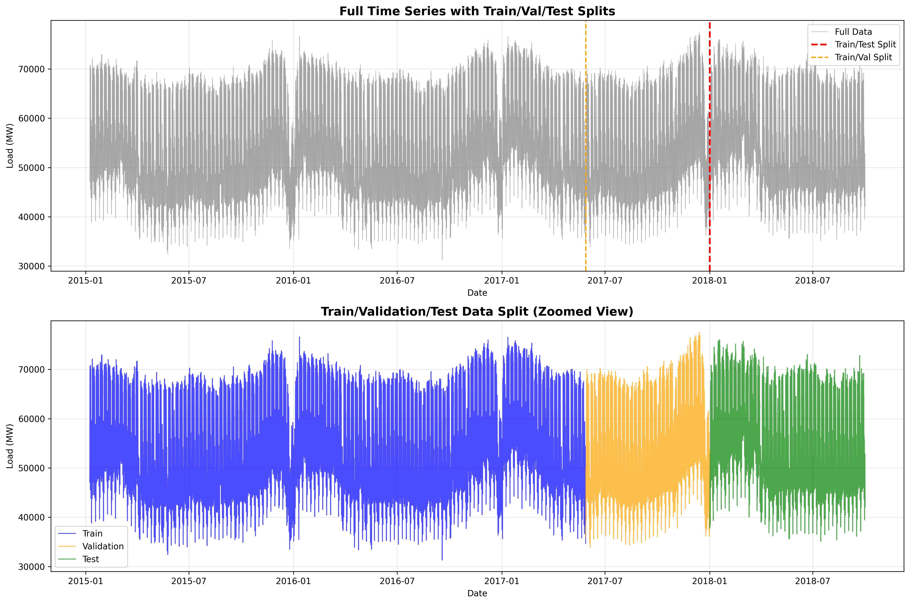
SARIMA Diagnostics
Fitted values, forecasts, and residuals analysis
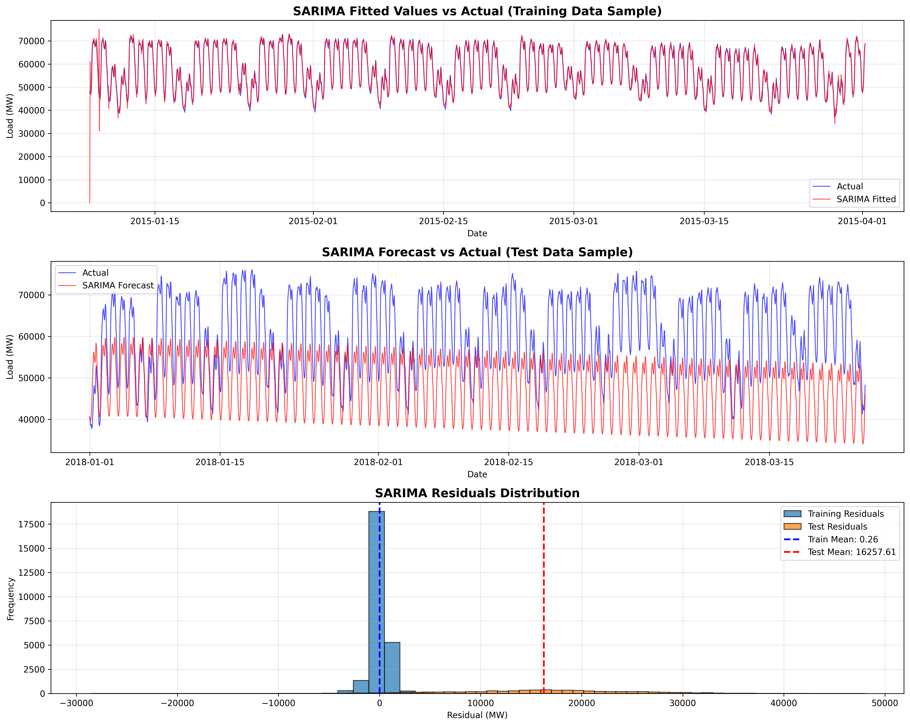
Residual Analysis
Residual targets and feature scaling
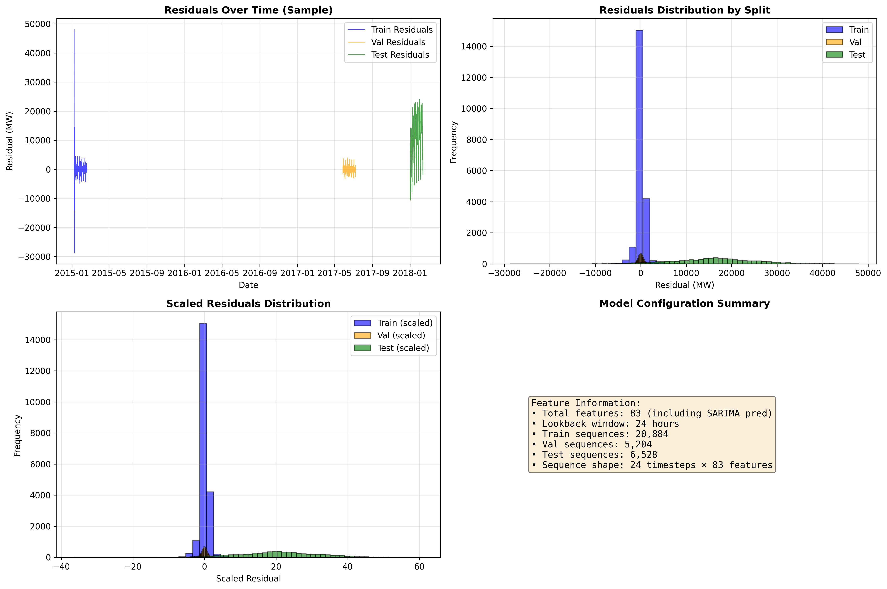
Performance Comparison
SARIMA vs Hybrid overall and peak performance
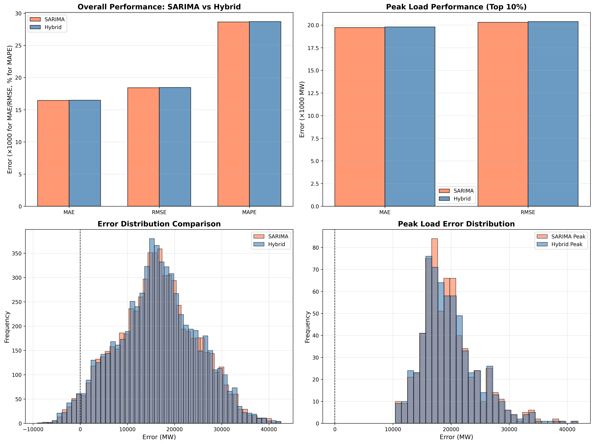
Prediction Summary
Distribution, statistics, and residual analysis
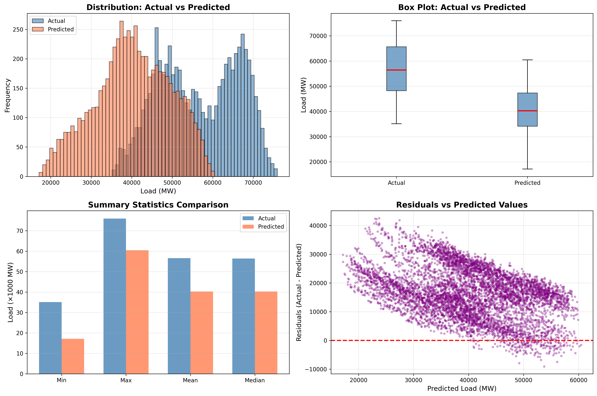
Comprehensive Metrics
All performance metrics visualization
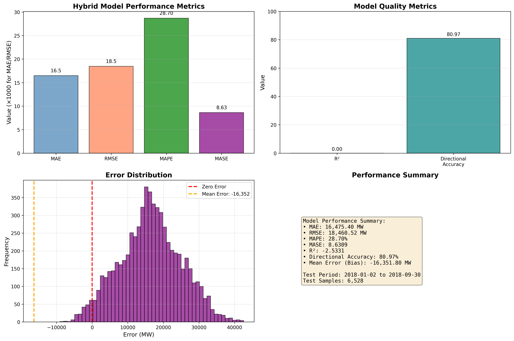
Peak vs Non-Peak Analysis
Performance comparison during peak and normal periods
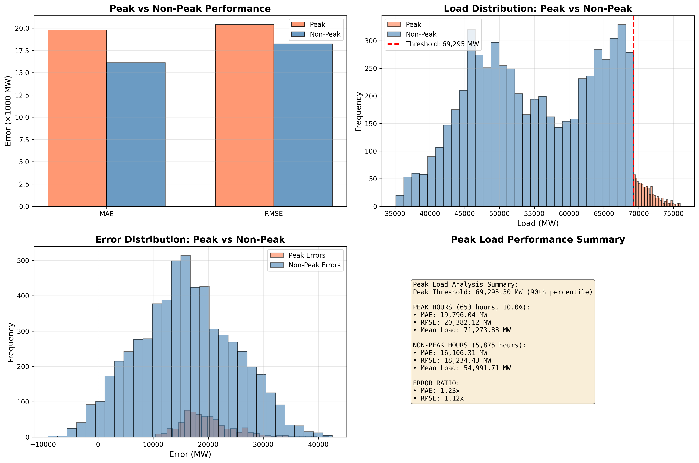
Critical Peak Analysis
SARIMA vs Hybrid for critical peak loads
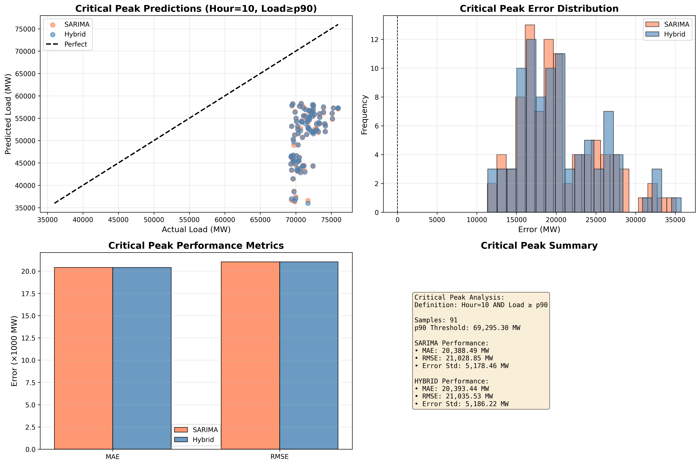
Time Series Comparison
Actual vs SARIMA vs Hybrid (30 days)
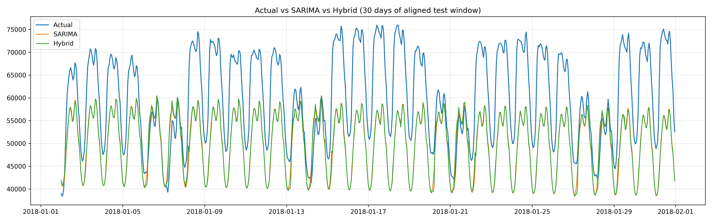
Model Summary
The Hybrid SARIMA + LSTM model improves directional reliability by learning residual errors on top of a strong seasonal baseline, while preserving SARIMA’s stability.However, the model shows high absolute error, indicating that while it tracks demand trends and peaks well, it struggles with precise magnitude calibration during volatile load periods